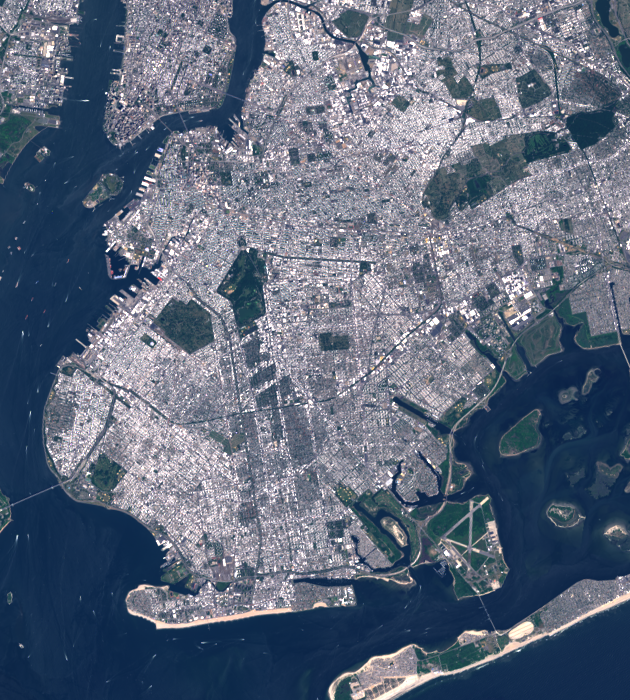
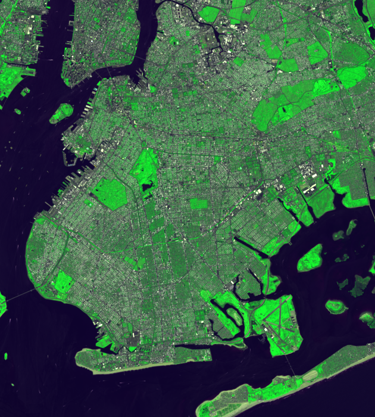
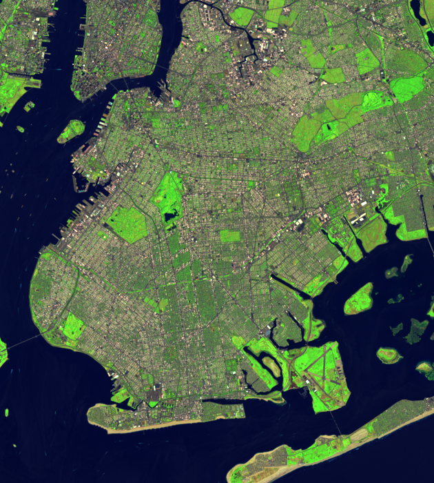
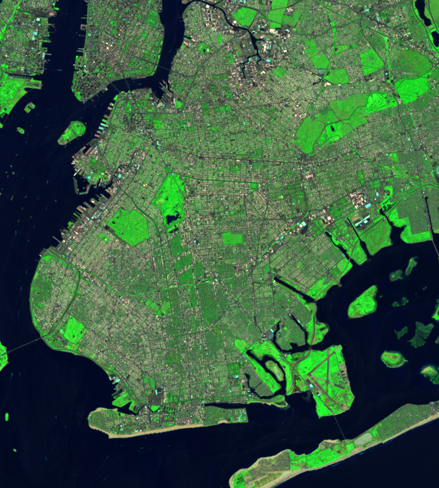
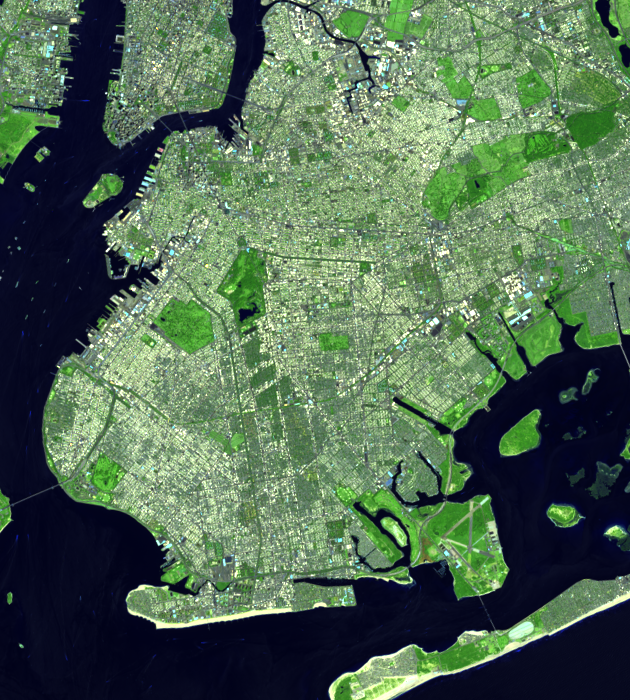
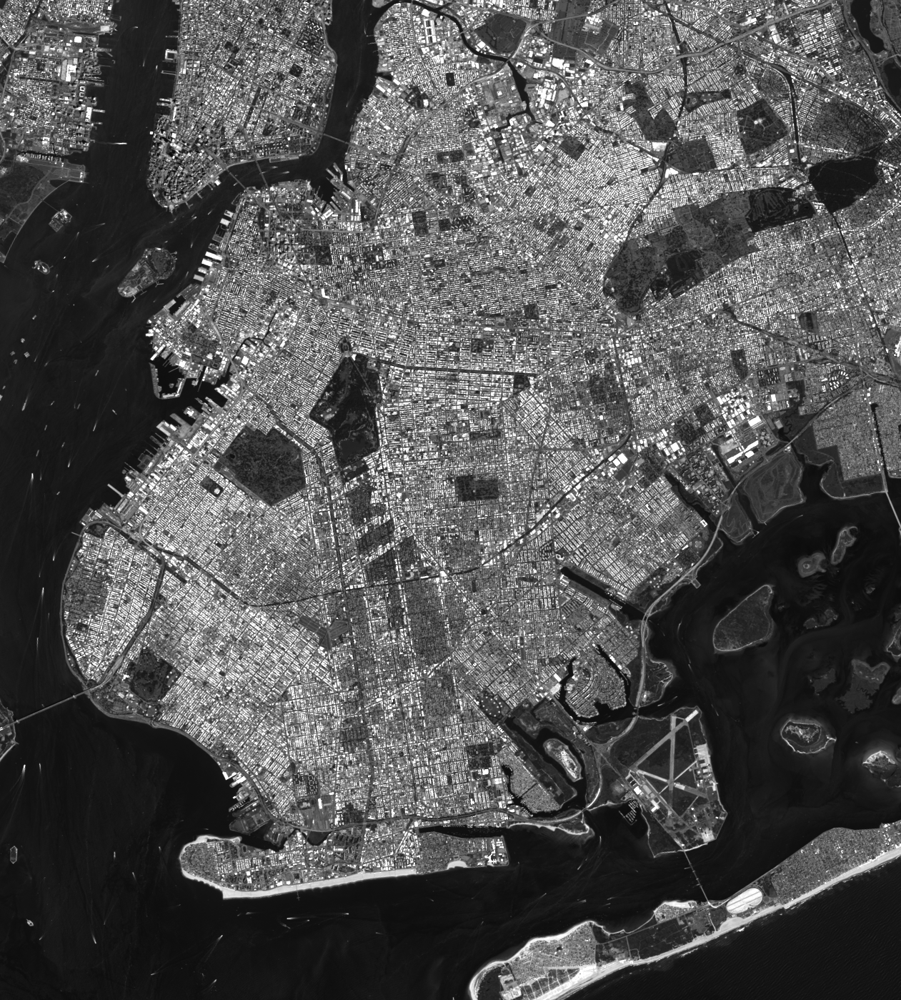

Band Combinations
Using true color images isn't the only way to look at satellite imagery, most US government satelites collect information from higher light wavelengths like light infrared.
import sys
import numpy as np
import rasterio as rio
bands = []
for i in sys.argv[1:]:
with rio.open('nyc/B%s.TIF' % i) as raster:
bands.append(raster.read(1))
profile = raster.meta
def correct(img):
mask = np.logical_and(img > 0, img < 65535)
top = np.percentile(img[mask], 99.9)
bottom = np.percentile(img[mask], 0.01)
scaled = (img - bottom) / float(top - bottom) * 65535
return np.clip(scaled, 0, 65535).astype(np.uint16)
img = correct(np.array(bands))
profile['count'] = img.shape[0]
profile['photometric'] = 'RGB'
with rio.open('nyc/%s.tif' % (''.join(sys.argv[1:])), 'w', **profile) as dest:
dest.write(correct(img), indexes=list(range(img.shape[0] + 1))[1:])
True Color
python correct-combine 4 3 2
gdal_translate nyc/432.tif nyc/432.png -projwin 579784.654973 4510357.217369 598693.420627 4489366.567310 -of PNG -ot Byte -scale 0 65536 0 255

Emphasize water
python correct-combine 4 3 1
gdal_translate nyc/431.tif nyc/431.png -projwin 579784.654973 4510357.217369 598693.420627 4489366.567310 -of PNG -ot Byte -scale 0 65536 0 255

Using infrared for the green band emphasizes vegetation
python correct-combine 4 5 2
gdal_translate nyc/452.tif nyc/452.png -projwin 579784.654973 4510357.217369 598693.420627 4489366.567310 -of PNG -ot Byte -scale 0 65536 0 255

Useful for crops
python correct-combine 6 5 2
gdal_translate nyc/652.tif nyc/652.png -projwin 579784.654973 4510357.217369 598693.420627 4489366.567310 -of PNG -ot Byte -scale 0 65536 0 255

What USGS uses for landsat look
python correct-combine 7 5 3
gdal_translate nyc/753.tif nyc/753.png -projwin 579784.654973 4510357.217369 598693.420627 4489366.567310 -of PNG -ot Byte -scale 0 65536 0 255

Urban Environments Emphasis on Buildings
python correct-combine 7 6 4
gdal_translate nyc/764.tif nyc/764.png -projwin 579784.654973 4510357.217369 598693.420627 4489366.567310 -of PNG -ot Byte -scale 0 65536 0 255

Pan chromatic band
This band is higher resolution than the others. We also can use earthexplorer to find orthoimagery that is even higher resolution.
python correct-combine 8
gdal_translate nyc/8.tif nyc/8.png -projwin 579784.654973 4510357.217369 598693.420627 4489366.567310 -of PNG -ot Byte -scale 0 65536 0 255

NDVI
NDVI or the Normalized Diffenence Vegetation Index is a way to quantify vegetation. Because it's a ratio it's better for comparing across scenes.
import sys
import numpy as np
import rasterio as rio
bands = []
for i in [5, 4]:
with rio.open('brazil/B%s.TIF' % i) as raster:
bands.append(raster.read(1).astype(np.float32))
profile = raster.meta
nir, r = bands
ndvi = (nir - r) / (nir + r)
profile['dtype'] = 'float32'
profile['nodata'] = 0
with rio.open('brazil/ndvi.tif', 'w', **profile) as dest:
dest.write(ndvi, 1)